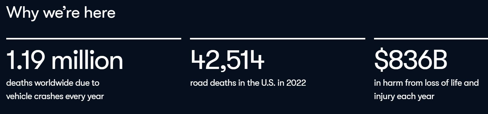
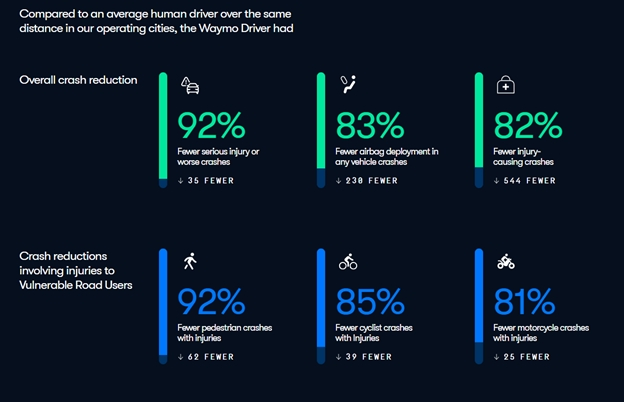
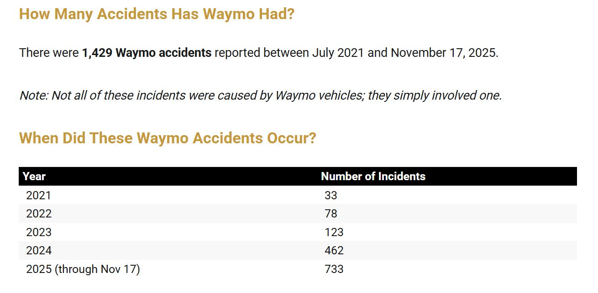

The Ethics of Autonomous Vehicles
A guide for policymakers by Amy Winter
A Wicked Problem

There's lots of hype and excitement about autonomous vehicles these days. AVs can purportedly improve road safety, reduce traffic congestion, save energy, make commutes productive, increase independence for people with disabilities, and expand public transportation options.
Glenn Lyons writes, "A wicked problem is one where views, values and interpretations concerning the problem itself are divergent (and sometimes strongly held), there is a paucity of evidence concerning the problem, and where the problem affects and is affected by other problems."
Autonomous vehicles qualify as a wicked problem due to the many complex technological and social questions and problems involved in their creation and deployment, causing "rippled effects to surrounding issues." On this page, we'll discuss some approaches for policymakers to evaluate the data, claims, and concerns about autonomous vehicles.
Focus on Safety
Despite the multiplicity of concerns involved in any wicked problem, a major focus of discussion about AVs has been safety. For example, Waymo, arguably the current leader in developing and deploying AVs for consumer use, provides the following data about general traffic safety on their website.

In the next section, the company displays statistics about Waymo's safety record, presumably to contrast with the broad statistics above:

They link to their "Safety Dashboard" which presents an impressive number of stylish charts and tables, provides in-depth Q&A, and offers the company's data for download.
Although this dashboard appears to provide exceptional transparency into Waymo's safety research, the volume of information and the way it is presented is overwhelming for the general public. Contrast it with this table and chart from a law firm (whose interest in the subject obviously differs from Waymo's):

These visuals communicate clearly that Waymo's accident totals are rising significantly—some might say, alarmingly— over time, a conclusion distinctly at odds with the one Waymo advocates. There are reasonable explanations for this increase; for example, over this time period Waymo was putting more vehicles into service and introducing them into new cities, which could cause an increase in the number of accidents even though the rate of accidents stayed the same.
However, a similar critique ought to be applied to Waymo's presentation of its own research data on safety. A 2024 report from Brookings claims that "it is not obvious that self-driving cars will be safer than human drivers" and cites a warning from the Association of Computing Machinery against assuming that "fully automated vehicles will necessarily reduce road injuries and fatalities." The Brookings article states that "it turns out that humans are remarkably safe drivers" with a fatality rate of 1:100 million miles driven. Both the Waymo data and the statistics offered by the law firm evaluate incident rates in raw numbers; it turns out, however, that accurately evaluating these numbers requires a common denominator like miles driven, to even begin to determine whether AVs actually have a better safety record than human drivers. In fact, the Brookings report concludes, "road fatalities are such rare events that studies of the fatality record of self-driving cars cannot demonstrate equivalent safety without driving hundreds of millions of miles...The best conclusion for now seems to be that the safety advantages of self-driving cars are aspirational but have not been proven."
Other Considerations
The above discussion demonstrates the complexity of addressing even one of the many controversial questions that exist regarding the wicked problem of regulating autonomous vehicles. Here are just a few of the other questions that have been raised.
If autonomous vehicles are safer than human drivers due to the elimination of human driving errors, will they introduce new safety risks caused by "human coding errors"?
Who is legally responsible when an autonomous vehicle has a crash? The manufacturer? The developer of the vehicle's sensors or algorithms? The owner? The human driver or monitor? The rider?
What is the impact of AVs on public health? If the claims of decreased pollution are true, would the resulting health benefits counteract a potential decrease in AV alternatives like biking or walking?
What is the impact of AV availability on funding for public transportation?
How do AVs manage privacy concerns? Does the car access data from the rider's phone? Can the car be hacked by malicious actors via its internet connection? What happens to the images the car's sensors collect of pedestrians? What privacy rights do people in the vicinity of the AV have, and how will those rights be protected?
Policymakers and regulators will have to grapple with all of these considerations and more when attempting to balance "the freedom of private manufacturers to innovate with the government's responsibility to protect" the public.
Possible Approaches
Researchers have attempted to weigh the competing concerns surrounding autonomous vehicles through a multiplicity of approaches.
Designing and programming autonomous vehicles' "ability to make quick and correct decisions in potentially fatal accident situations" to balance risk and ensure the best outcome for all involved is more complicated than it seems. When the AV "must assess who and/or what is at greater risk and adjust operations to eliminate or minimize risk, damages, injuries, and death," will it actually introduce new risks by, for example, stopping unexpectedly when it is confused by a stationary object next to the road or by lane lines that are faded or obscured by weather conditions?
Chris Gerdes, a researcher at Stanford's Center for Automotive Research, suggests a rule-based approach for designing decision-making algorithms for AVs. "The solution is right in front of us. It's built into the social contract we already have with other drivers, as set out in our traffic laws and their interpretation by the courts."
But programming AVs to strictly follow traffic laws doesn't address how they should adapt when the rules change (such as navigating between jurisdictions when rules about something as common as turning right on a red light can differ) or when breaking the law could reduce harm (like swerving into an empty lane to avoid a pedestrian).
Policymakers can also consider the AV problem from a human-rights focused perspective. The principle of participation from the Human Rights Based Approach to sustainable development asserts that "everyone is entitled to active participation in decision-making processes which affect the enjoyment of their rights." Several researchers have applied the idea of participation to the question of autonomous vehicles by convening conversations among individuals likely to be impacted by the social and technological changes.
For example, this study uncovered interesting information that might surprise those who have based the discussion of AV behavior in a strictly technological context. Study participants' opinions encompassed much more than their preferences regarding collision avoidance; they were willing to take risks themselves for the benefit of other road users. Participants "express their acceptance of a higher collision probability for themselves if this decreases the probability of a more severe collision for others."
In this study, participants "acknowledged that they had underestimated how many issues needed to be addressed in order to progress towards a (positive) driverless cars future." They valued an opportunity to discuss the controversial issue with others from different backgrounds who held different opinions, and were appreciative of the opportunity to discuss the issue in depth.
Facilitating community conversations in different formats, like focus groups or formal meetings, provides opportunities for "collaboration in thinking through an ethics problem" that can uncover limitations in reasoning, surface different perspectives, and understand divergent opinions. (Markel M. (1997) Ethics and Technical Communication: A Case for Foundational Approaches. IEEE Transactions on Professional Communication, Vol. 40, No. 4.)
Considering the Meta
The subtext of the above discussions is that autonomous vehicles are an inevitability; the role of individuals is to embrace them, and the role of government is to regulate them to protect the health, safety, and privacy of the public. But it is possible to take a step back, and consider: if the purpose of technological tools is to serve humans, do AVs do that? Elizabeth Lopatto writes, "Within recent memory, people who made software and hardware understood their job was to serve their customer. It was to identify a need, and then fill it. But at some point following the financial crisis, would-be entrepreneurs got it into their heads that their job was to invent the future, and consumers’ job was to go along with that invented future."
But there are other options. If states and municipalities determine AV technology is not beneficial for their citizens, they can refuse to allow AVs to operate in their jurisdiction. The historical example of the Luddite movement provides a philosophy and a set of tools to evaluate the value of technological changes in social terms. The Luddites saw technology "being used to extract wealth, consolidate control, and concentrate power over their livelihoods in the hands of a few business owners."
To counteract this trend, Wendell Berry suggested a set of standards for judging the value of new technical tools, including: They should be cheaper and do better work than the tool they are replacing; they should use renewable energy; and they should not disrupt anything good that already exists, including family and community relationships.
How do autonomous vehicles stand up to the scrutiny of these standards? For example, until it is proven that AVs are safer than human operated cars, do AVs provide any advantage over services like Uber and Lyft? Don't driverless cars contribute to the increasing social disconnection in developed countries? In fact, given that connecting with strangers can have positive effects, mightn't it be worth a little awkward smalltalk?It's been argued that AVs "could give large segments of the population -- such as the elderly and handicapped -- the freedom of greater mobility", but can they help those people with suitcases or groceries as drivers of paratransit vans can?

In the current political climate, there may be increased interest in and support for asking questions like "whether a global society should be managed by and for multinational corporations," or "What is the system that we want to create and who has power in that system?" Policymakers can benefit from facilitating conversations about these questions in their attempt to create regulations that protect and benefit all people.